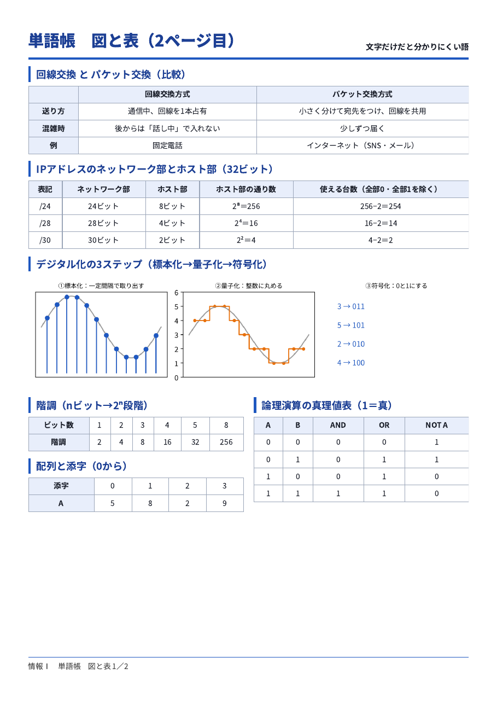
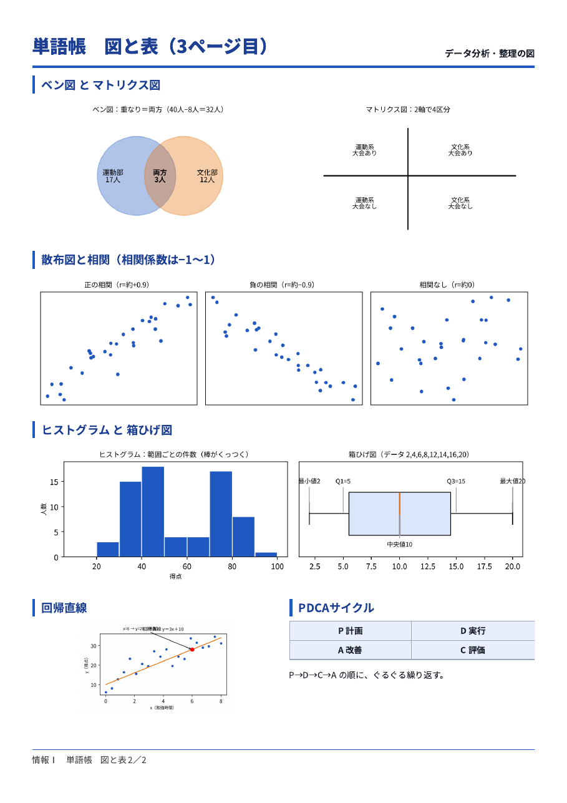

単語帳 最重要20語
テストで知識問題として問われる語だけ。赤字＝意味。灰色の小さい字は覚え方。できたら右の□にチェック（このブラウザに保存されます）。
赤字をかくしたあと、赤い帯をタップ（クリック）すると、その語だけ意味が見えます。
| No. | 単語 | 意味（赤字）と覚え方 | 復習 |
|---|---|---|---|
| 1 | 第1問ネットワーク・データ パケット交換方式 | 小さく分けたデータを、回線を共用して送る方式 パケット＝小包。回線は共用、途中で欠けたら再送。 | |
| 2 | 第1問ネットワーク・データ 回線交換方式 | 通信の間、相手との回線を1本まるごと占有する方式 回線交換＝貸し切り。固定電話。 | |
| 3 | 第1問ネットワーク・データ クラウドサービス | サーバなどを自分で持たず、ネットで使えるサービス クラウド＝機器を自分で設置しなくてよい。 | |
| 4 | 第1問問題解決 デジタルデバイド | 情報機器を使える人と使えない人の格差 デバイド＝分断。年齢や経済力で生じる。 | |
| 5 | 第1問ネットワーク・データ IPアドレス（ネットワーク部・ホスト部） | ネットワーク上の機器の住所。上位が所属先、下位が機器を表す IPv4は32ビット。ホスト部nビットなら使える台数は2のn乗−2。 | |
| 6 | 第1問問題解決 ベン図 | 集合の重なりを、円の重なりで表した図 ベン＝円の重なり。 | |
| 7 | 第1問問題解決 PDCAサイクル | 計画・実行・評価・改善を繰り返して、よりよくする考え方 PDCA＝循環図。Plan→Do→Check→Action。 | |
| 8 | 第1問問題解決 マトリクス図 | 2つの軸で区切り、4つの区分に分類して表す図 マトリクス＝2軸×4区分。 | |
| 9 | 第1問情報デザイン 標本化 | 連続した画像や音を、一定の間隔で取り出すこと 標本化＝区切って取り出す（手順1）。 | |
| 10 | 第1問情報デザイン 量子化 | 連続した値を、とびとびの整数に置き換えること 量子化＝段階に分けて整数にする（手順2）。 | |
| 11 | 第1問情報デザイン 符号化 | 整数値を、2進法の0と1の並びで表すこと 符号化＝0と1にする（手順3）。 | |
| 12 | 第1問情報デザイン 階調 | 濃淡の段階の数。nビットなら2のn乗段階 3ビット＝8階調、8ビット＝256階調。 | |
| 13 | 第1問情報デザイン デジタルデータのメリット | コピーや伝送を繰り返しても、劣化しないこと アナログは劣化、デジタルは劣化しない。 | |
| 14 | 第2問プログラミング 論理演算（AND・OR・NOT） | 「かつ・または・でない」で、真偽を組み合わせる演算 1111とのANDは元のまま、0000とのANDは0000。 | |
| 15 | 第2問プログラミング 配列と添字 | データに番号をつけてまとめたものと、その番号 要素数nなら最後の添字はn−1。 | |
| 16 | 第3問ネットワーク・データ 散布図 | 2つの量の関係を、点の位置で表したグラフ 点の並び方で、相関の向きと強さが見える。 | |
| 17 | 第3問ネットワーク・データ 相関係数 | 2つの量の関係の強さを、−1〜1で表す値 強くても、原因とは限らない。 | |
| 18 | 第3問ネットワーク・データ ヒストグラム | 値の範囲ごとの件数（度数）を、棒で表したグラフ 山の形で、分布の様子（偏り・山の数）が分かる。 | |
| 19 | 第3問ネットワーク・データ 四分位数と箱ひげ図 | 4等分する境目の値と、それで散らばりを表す図 第1・第2（中央値）・第3。箱の中の線は中央値。 | |
| 20 | 第3問ネットワーク・データ 回帰直線 | 散布図の点に最もよくあてはまる、予測用の直線 傾き＝xが1増えたときのyの増加量。 |
図と表
文字だけだと分かりにくい語を、図や表でまとめました。

